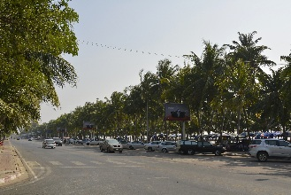

Chonburi (ชลบุรี)
Capital da província de mesmo nome.Por bastante tempo foi uma popular cidade litorânea, mas agora perdeu protagonismo para Pattaya, a queridinha do turismo na província.
Mas a cidade não vive do turismo, sendo um importante centro agrícola com fábricas que processam cana de açúcar e seringueiras, além de ser o 2º maior polo industrial do país.
Evidências históricas apontam que a fundação da cidade se deu no período Ayutthaya, e que originalmente ela era composta de cidades menores como Mueang Bang Sai, Mueang Bang Pla Soi e Mueang Bang Phra.
Foi o rei Rama V que ordenou a fusão dessas cidades, dando origem à Chonburi, cujo nome significa Cidade da Água.
Atualmente faz parte da conurbação conhecida como Área Metropolitana de Pattaya-Chonburi.
Fica há cerca de 100km de distância da capital Bangcoc e em 2006 a cidade tinha uma população de cerca de 180.000 habitantes.
Como chegar à Chonburi
De carro: há diferentes rotas de Bangcoc à Chonburi: a rodovia 34, que vai de Bang Na-Trat à Chonburi; a rodovia 304, de Bangcoc à Min Buri, passando pela província de Chachoengsao e Bang Pakong até chegar em Chonburi; e a antiga rota da Sukhumvit Road, rodovia 3, passando por Samut Prakan até a intersecção do distrito de Bang Pakong.De trem: há um trem diário saindo da Estação Hua Lamphong em Bangcoc, às 6:55. A passagem varia de ฿$ 23 à ฿$ 108, dependendo da classe do vagão.
De ônibus: da Eastern Bus Terminal (Ekamai) saem vários ônibus para Chonburi, a cada 40 minutos das 5:30 às 21:00. Ônibus de 2ª classe saem das 5:30 às 21:00 a cada 30 minutos. Ônibus sem ar condicionado saem de Ekamai a cada 30 minutos, das 5:00 às 21:00. Há também ônibus saindo do terminal Mo Chit 2. Ônibus com ar condicionado saem das 6:30 às 18:30.
As atrações de Chonburi
Santuário de Nacha Sa Thai Chue (Wihan Thep Sathit Phra Kiti Chalerm)
Belíssimo templo chinês de 4 andares construído em 1991 pelo mestre Somchai Choeisiri.
O nome Thep Sathit Phra Kiti Chalerm foi dado pelo patriarca supremo e significa moradia dos deuses.
O templo é desenhado e decorado com traços arquitetônicos e decorativos tipicamente chineses, e espalhados pelo templo há 2840 esculturas de dragões.
No Salão do Céu e da Terra, há um poste com um dragão medindo 36m de altura, com 9 dragões representando o Sol e os 8 planetas do Sistema Solar.
O nome Thep Sathit Phra Kiti Chalerm foi dado pelo patriarca supremo e significa moradia dos deuses.
O templo é desenhado e decorado com traços arquitetônicos e decorativos tipicamente chineses, e espalhados pelo templo há 2840 esculturas de dragões.
No Salão do Céu e da Terra, há um poste com um dragão medindo 36m de altura, com 9 dragões representando o Sol e os 8 planetas do Sistema Solar.
Local: 1/13 Moo 5, rua Ang Sila-Bangsaen, Ang Sila. Seguindo pela Sukhumvit Rd, vire à direita para a rua Ang Sila, na esquina do
Old Market Ang Sila, vire à esquerda para a rua Ang Sila-Bangsaen. O templo fica à esquerda.
Horário: de Segunda a Sexta das 8:00 às 17:00, Sábado das 8:00 às 18:00 e Domingo das 8:00 às 20:00.
Entrada: gratuita.
Voltar à lista
Horário: de Segunda a Sexta das 8:00 às 17:00, Sábado das 8:00 às 18:00 e Domingo das 8:00 às 20:00.
Entrada: gratuita.
Wang Saen Suk (Hell Garden / Jardim do Inferno)
Templo em uma área de 32 rai, com estátuas medonhas representando o sofrimento e a punição após a morte pelos feitos ruins
durante a vida.
Foi construído pela Venerable Phothisatto Foundation como um lembrete para que as pessoas mantenham um padrão moral elevado e fé nos ensinamentos de Buda sobre a causa e o efeito das coisas.
Mas o templo não se resume à representações violentas e bizarras do inferno. Na área conhecida como Land of Buddhism (Terra do Budismo) há representações de Buda no nascimento, alcançando a iluminação e na morte, além de estátuas de divindades hindus.
Foi construído pela Venerable Phothisatto Foundation como um lembrete para que as pessoas mantenham um padrão moral elevado e fé nos ensinamentos de Buda sobre a causa e o efeito das coisas.
Mas o templo não se resume à representações violentas e bizarras do inferno. Na área conhecida como Land of Buddhism (Terra do Budismo) há representações de Buda no nascimento, alcançando a iluminação e na morte, além de estátuas de divindades hindus.
Local: 12 Bangsaen Sai 2nd Rd, Soi 19.
Entrada: gratuita, mas você pode fazer uma doação.
Voltar à lista
Entrada: gratuita, mas você pode fazer uma doação.
Praia de Bang Saen (Bang Saen Beach / หาดบางแสน)
Principal praia da cidade, há 14km do centro, com casinhas amontoadas que se estendem por uma área bem grande.
Em 1943 o governo construiu o primeiro resort de férias do país nessa praia.
Não é muito conhecida pelos turistas estrangeiros, e a grande maioria dos visitantes da praia é tailandesa.
Em 1943 o governo construiu o primeiro resort de férias do país nessa praia.
Não é muito conhecida pelos turistas estrangeiros, e a grande maioria dos visitantes da praia é tailandesa.

Local: distrito de Bang Saen.
Voltar à lista
Vila de Ang Sila (อ่างศิลา / Ang Hin Village)
Vila de pescadores há uns 5km do centro da cidade, bastante conhecida por sua manufatura local, esculturas em granito e restaurantes de frutos do mar.
Esses produtos locais são facilmente encontrados em barraquinhas ao longo da rua principal.
Esses produtos locais são facilmente encontrados em barraquinhas ao longo da rua principal.
Local: há cerca de 6km ao norte da Bang Saen Beach, na faixa da praia.
Voltar à lista